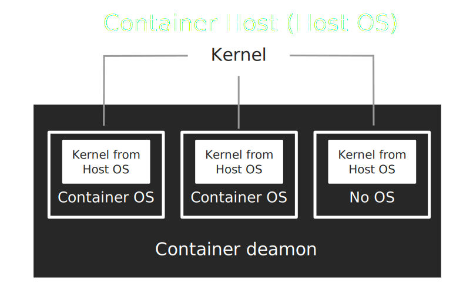

Make your scientific software portable
with Singularity containers
Tomasz Golan, ZFN
What is a container
A container is a stand-alone executable package
operating system
libraries
software
data
It can be run on any OS
 src: docker.com
src: docker.com
OS in a container

Containers vs Virtual Machines
src: docker.com


Why to use containers
one can encapsulate software with all dependencies (libraries, data, ...) in a single executable package
easy to share with others
easy to run on clusters
easy to reproduce previous results

Singularity

src: singularity.lbl.gov
Basic usage
Hello World - get an image
- grab Ubuntu 17.10 from Docker Hub (more tags: link)
$ singularity pull docker://ubuntu:17.10$ ls -lh
razem 37M
-rwxr-xr-x 1 goran goran 37M gru 6 12:15 ubuntu-17.10.img
Hello World - execute
- to execute [command] from [img file]
singularity exec [img file] [command]$ singularity exec ubuntu-17.10.img ls --version
ls (GNU coreutils) 8.26
$ ls --version
ls (GNU coreutils) 8.25
Hello World - kernel / user
- the same kernel
$ uname -a
Linux ux306-ift 4.10.0-40-generic #44~16.04.1-Ubuntu SMP Thu Nov 9 15:37:44 UTC 2017 x86_64 x86_64 x86_64 GNU/Linux
$ singularity exec ubuntu-17.10.img uname -a
Linux ux306-ift 4.10.0-40-generic #44~16.04.1-Ubuntu SMP Thu Nov 9 15:37:44 UTC 2017 x86_64 x86_64 x86_64 GNU/Linux
- the same user
$ whoami
goran
$ singularity exec ubuntu-17.10.img whoami
goran
Hello World - HOME
- different content
$ ls /opt/
eZuceSRN google skypeforlinux zoom Zotero_linux-x86_64
$ singularity exec ubuntu-17.10.img ls /opt/
- but
$HOMEthe same
goran@ux306-ift:~/singularity$ ls ~
git nuwro 2017 Pobrane Pulpit singularity
goran@ux306-ift:~/singularity$ singularity exec ubuntu-17.10.img ls ~
Pobrane Pulpit git nuwro 2017 singularity
Hello World - shell
- interactive shell within a container
$ singularity shell ubuntu-17.10.img
Singularity: Invoking an interactive shell within container...
Singularity ubuntu-17.10.img:~/singularity> ls -w 80 /bin/
bash dmesg gzip mount run-parts true zegrep
cat dnsdomainname hostname mountpoint sed umount zfgrep
chgrp domainname kill mv sh uname zforce
chmod echo ln nisdomainname sh.distrib uncompress zgrep
chown egrep login pidof sleep vdir zless
cp false ls ps stty wdctl zmore
dash fgrep lsblk pwd su which znew
date findmnt mkdir rbash sync ypdomainname
dd grep mknod readlink tar zcat
df gunzip mktemp rm tempfile zcmp
dir gzexe more rmdir touch zdiff
Singularity ubuntu-17.10.img:~/singularity>